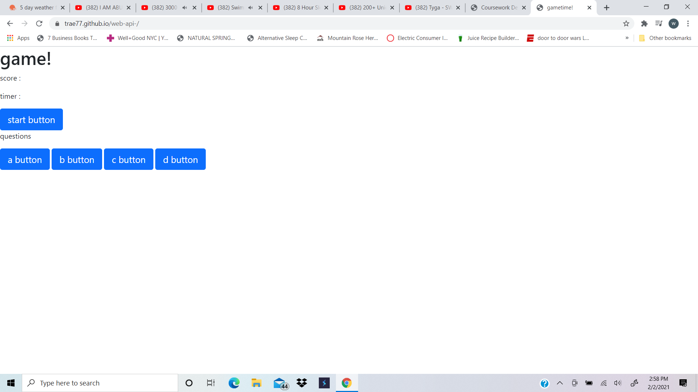
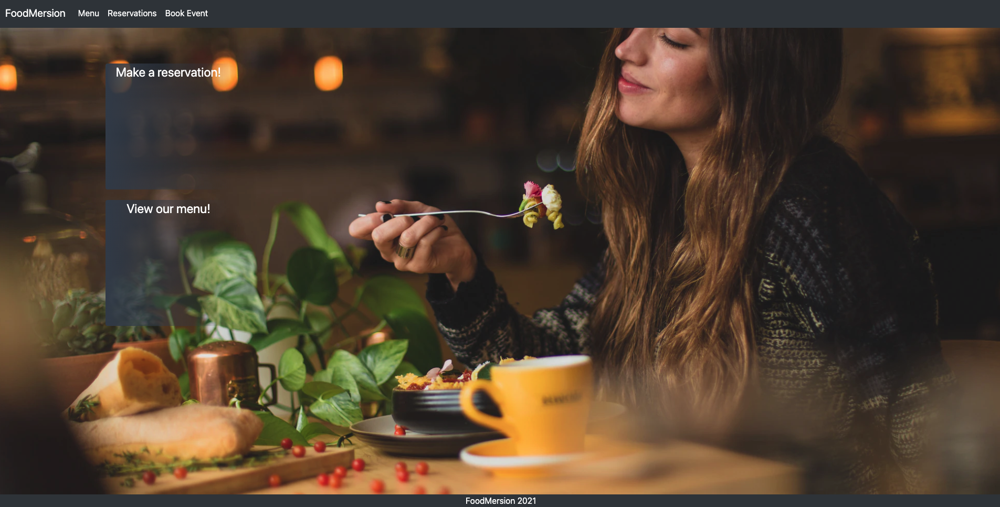

Apps that i have developed
.png) movie rec Summary: The objective is to create a website where many people at home quarantined can look for a show or movie to watch.
Tools: HTML, CSS, JavaScript, Bootstrap
movie rec github
movie rec Summary: The objective is to create a website where many people at home quarantined can look for a show or movie to watch.
Tools: HTML, CSS, JavaScript, Bootstrap
movie rec github
.png) Work day planner Summary:a calendar for your workday that responds dynamicly.
Tools: HTML, CSS, JavaScript
Planner github
Work day planner Summary:a calendar for your workday that responds dynamicly.
Tools: HTML, CSS, JavaScript
Planner github
 A quiz with timer Summary:Game with a timer
Tools: HTML, CSS, JavaScript
Quiz github
 look at employees and salariesSummary:Command line application using node.js and MySQL for the database in order to keep track of employees, their departments, managers, salaries, and roles in the company.
Tools: node.js, MySQL
look at employees and salariesSummary:Command line application using node.js and MySQL for the database in order to keep track of employees, their departments, managers, salaries, and roles in the company.
Tools: node.js, MySQL
Hope your HungrySummary: FullStack website for our imaginary restaurant FoodMersion - an interactive dining experience.
Tools: HTML, CSS, JavaScript, Bootstrap, sequalize , handlebars, Mysql, Insomnia
FoodMersion github
 Blog githubSummary: keeps blogs with titles
Tools: HTML, CSS, JavaScript, Bootstrap, sequalize , Mysql, Insomnia
Blog githubSummary: keeps blogs with titles
Tools: HTML, CSS, JavaScript, Bootstrap, sequalize , Mysql, Insomnia